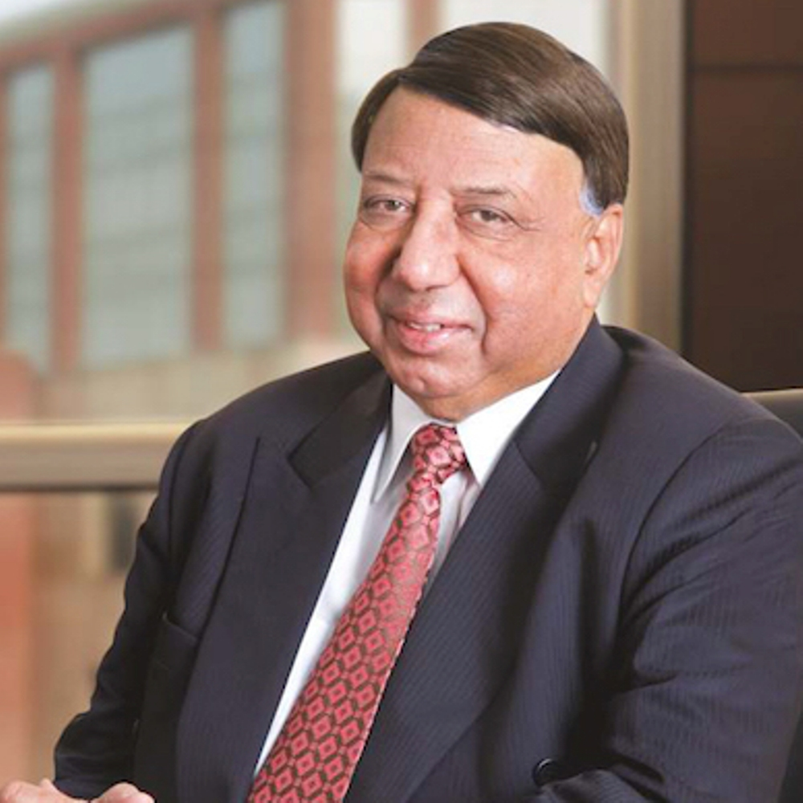
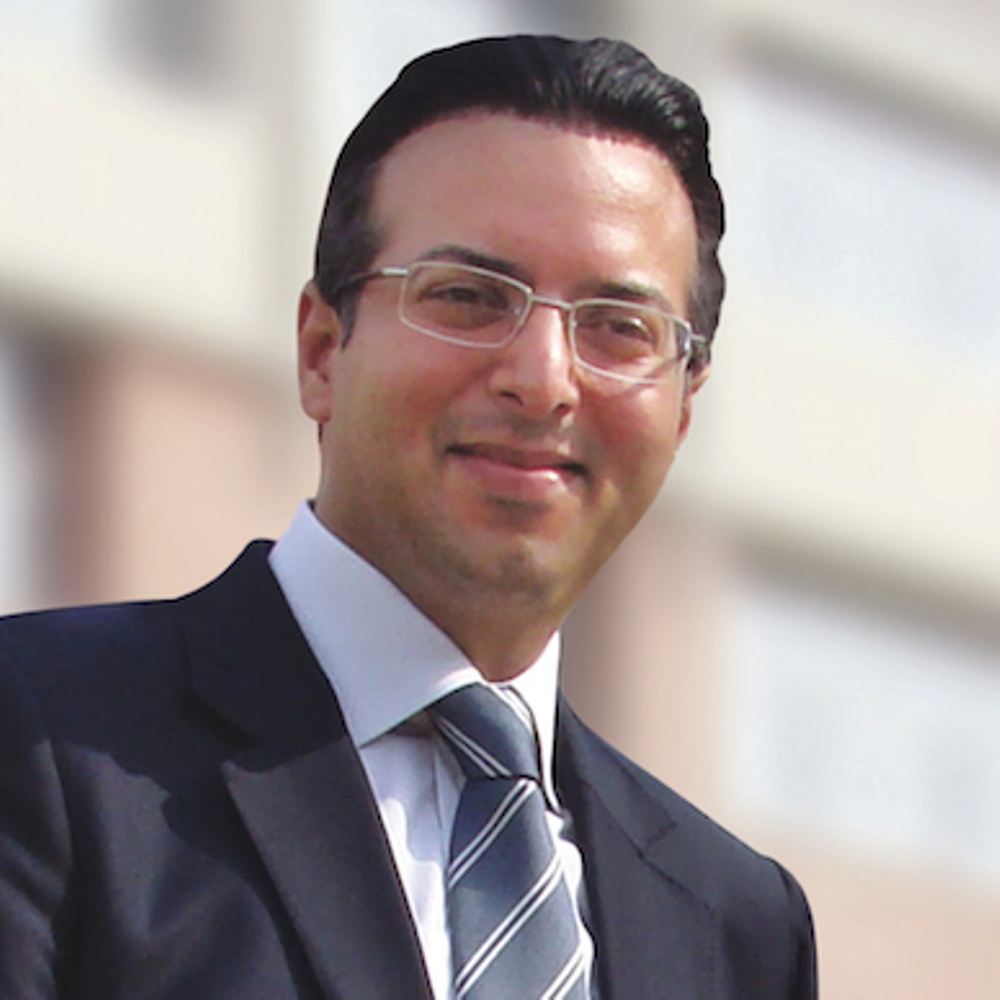
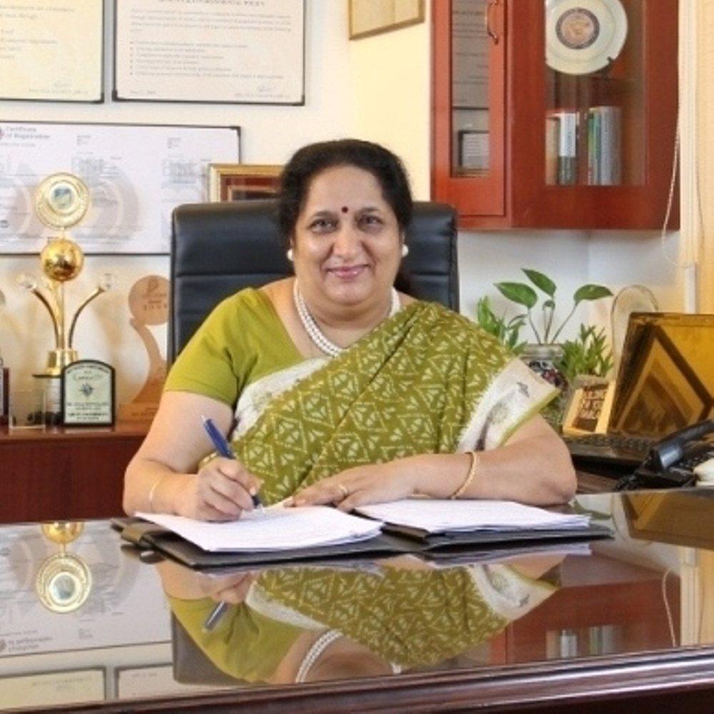
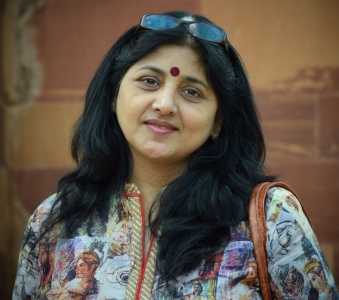

|  |
It gives me immense pleasure to welcome you to the fifth edition of Amity International Model United Nations Conference on the theme "Putting Humanity before Mankind" to be held on January 8, 9 and 10, 2016 at Amity University Campus, Sector-125, Noida, U.P., India. Model United Nations, an academic simulation of various proceedings of the United Nations with students representing the delegations of various countries has now become one of the most popular and prestigious events in schools and colleges due to its multifaceted nature. Amity firmly believes in the holistic development of the youth and provides ample opportunities to develop and promote their potentials for research, diplomacy, leadership, public speaking, critical thinking and teamwork skills. AUUP hosted the first edition of MUN in the year 2011 where it witnessed the extreme relevance of learning international affairs and understanding the role of the United Nations. It emphasised the values for peacemaking, security, conflict prevention, social progress, better living standards and human rights. The MUN platform facilitated the atmosphere conducive to learning about developing the international relations through meeting, discussing & collaborating with equally intellectual and talented peers on a range of pressing global issues. The youth perspectives can find efficient and pragmatic solutions to the menaces which our contemporary world faces. AMIMUN’16 will feature 400+ delegates from over 60 colleges and universities from all over the world. This year’s theme, “Putting Humanity before Mankind” deals with accelerating the process of overall development in the developing countries of the world, laying specific emphasis on countries with special needs, vulnerabilities and development changes. This MUN will be a unique convention, with delegates from all round the world bringing a host of new ideas and opinions which will give birth to a new generation of strong, confident and above all compassionate leaders. I take this opportunity to express my best wishes to the delegates from all over the world for their participation & learning in this conference and wish them a pleasant stay in Delhi/NCR. I compliment the meticulous hard work of the organising committee members and wish AMIMUN’16 a great success! |
|  |
Greetings! I feel so elated and honoured to pen down this message to welcome you all to the 5th Amity International Model United Nations Conference. This year at AMIMUN, is special for us as we celebrate the 5 years of extraordinary debating and deliberations. After 4 years of such high standard discussions wherein delegates indulged in debates and tried to find solutions for world problems, we are glad to bring to you the 5th edition. This year’s theme, “Putting Humanity before Mankind” deals with accelerating the process of overall development in the developing countries of the world, laying specific emphasis on countries with special needs, vulnerabilities and development changes. The theme focuses on letting Humanity take a step ahead of Mankind. Given the difficult times we live in, this theme becomes relevant and special cognizance has to be taken. This year’s Conference is a celebration of the 5 years of AMIMUN. We are glad to introduce our Advisory Panel for the first time as part of the Conference which comprises persons of eminence including diplomats, social thinkers and people of expertise in the field. We are also extremely honoured to have on board Ambassadors and top diplomats from different countries, social activists, personages from the political spectrum, diplomats, various NGOs and social organisations for our Conference which has made it more inclusive and grand in its own nature. Our attempt to make the Conference socially relevant and inclusive has been successful. I feel so happy to share this with you. Its a continuous effort at Amity University to create an environment for healthy debating which not only inculcates a sense of information and research but also a sense of belongingness and sensitivity towards critical issues that concern the contemporary world. This time AMIMUN has not only become inclusive but has grown grand in stature and standards because of its associations and participations which are from around the globe. The event this time, as part of our celebration has attracted huge attention from the education circuit and requests for more registrations have poured in. We are extremely glad to have such interests on board. As the Chairperson of AMIMUN’16, I take this opportunity to express my best wishes to all the global participants that would be a part of this conference. I assure you that this would be among one of the best events to be witnessed by you. An event which would be unparallel and unique its approach and high in its standards. An event which would be high on fervour and fiery debating. An event which would at the end, strive to find a solution to critical issues through intellect. I welcome you to be a part of the extravaganza.
We look forward to host you in January!
|